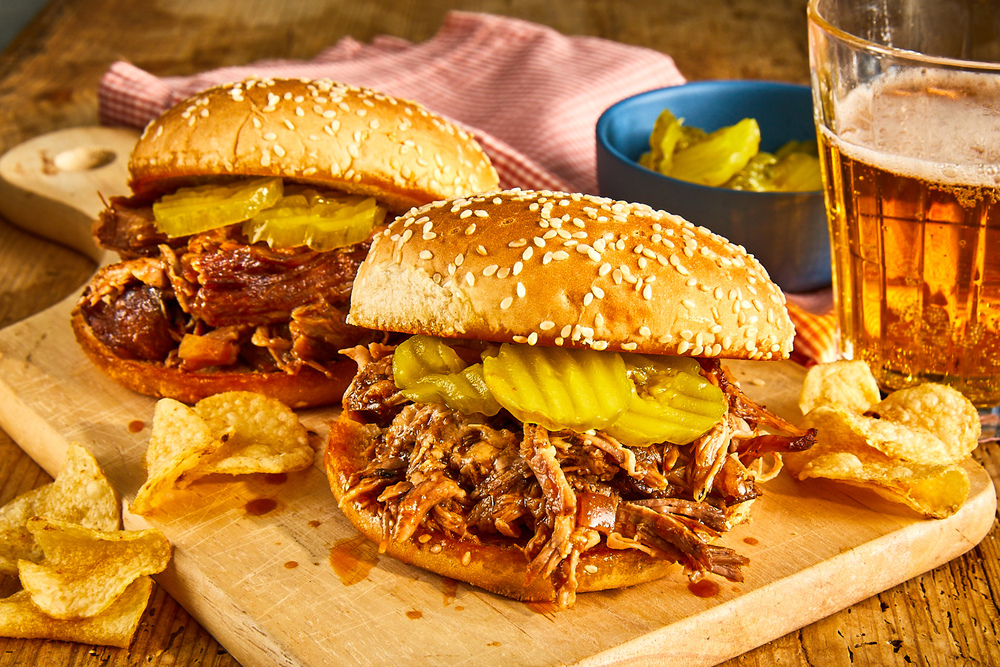

Homepage
Lasagna recipe

Slow cooked, Texas-style pulled pork that is served on a buttered and toasted roll. My family's favorite.
Ingredients
- 1 teaspoon vegetable oil
- 1 (4 pound) pork shoulder roast
- 1 cup barbeque sauce
- ½ cup apple cider vinegar
- ½ cup chicken broth
- ¼ cup light brown sugar
- 1 tablespoon prepared yellow mustard
- 1 tablespoon Worcestershire sauce
- 1 tablespoon chili powder
- 2 large cloves garlic, crushed
- ½ teaspoons dried thyme
- 8 hamburger buns, split
- 2 tablespoons butter, or as needed
- Step 1
Pour the vegetable oil into the bottom of a slow cooker. Place the pork roast into the slow cooker;
pour in the barbecue sauce, apple cider vinegar, and chicken broth. Stir in the brown sugar, yellow
mustard, Worcestershire sauce, chili powder, onion, garlic, and thyme. Cover and cook on High until
the roast shreds easily with a fork, 5 to 6 hours.
- Step 2
Remove the roast from the slow cooker, and shred the meat using two forks. Return the shredded pork
to the slow cooker, and stir the meat into the juices.
- Step 3
Spread the inside of both halves of hamburger buns with butter. Toast the buns, butter side down,
in a skillet over medium heat until golden brown. Spoon pork into the toasted buns.